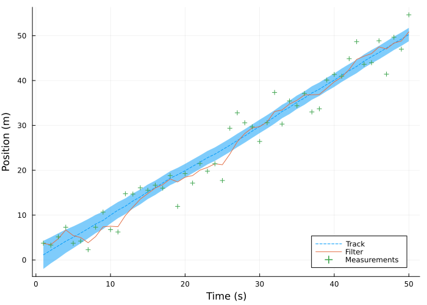
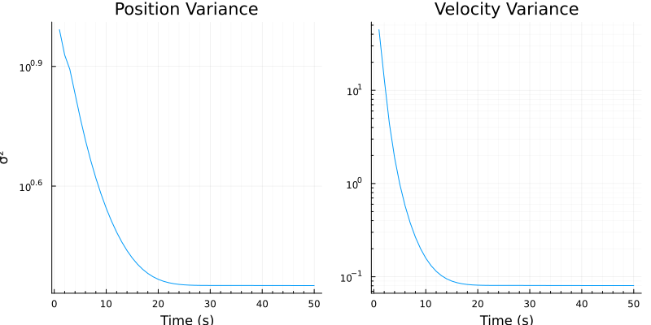
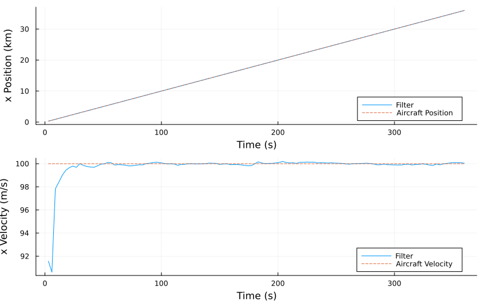
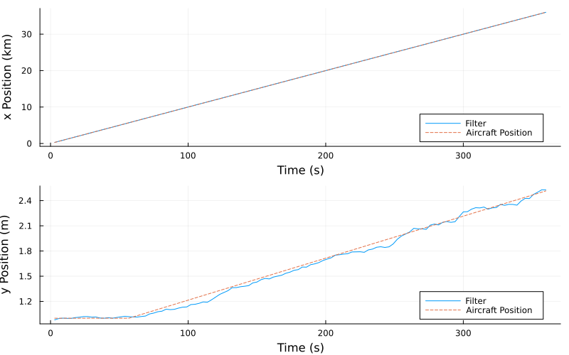
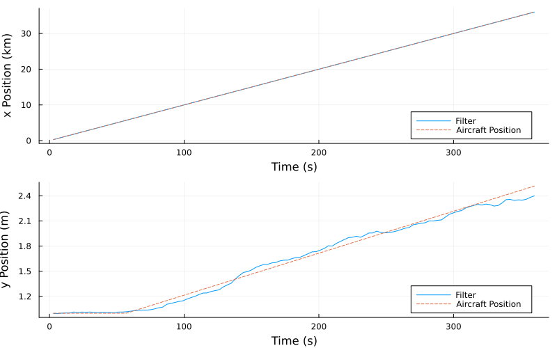

using Plots, Random, LinearAlgebra, Distributions, ForwardDiff
include("/Users/michal/Code/scripts/scripts/state_estimation.jl");Kalman Filter Demo
This document demonstrates the usage of the generalized regular and unscented Kalman filter algorithms implemented in Julia. The underlying code for the regular and unscented Kalman filter algoirthms can be found at scripts/state_estimation.jl.
Kalman Filter
The ordinary Kalman filter can be used to estimate the state of linear dynamic systems. The algorithm contains two distinct steps, prediction and updating. The equations that describe the predict step are given by: \[ \bar{\textbf x} = \textbf{F} \textbf x + \textbf B \textbf u \]
\[ \bar{\textbf P} = \textbf F \textbf P \textbf F^\intercal + \textbf Q \]
Where \(\textbf x\), \(\textbf P\) are the state mean and covariance, \(\bar{\textbf x}\), \(\bar{\textbf P}\) are the predicted state mean and covariance, \(\textbf F\) is the state transition function, \(\textbf Q\) is the process covariance, and \(\textbf B\), \(\textbf u\) are the control input model/function and the control input to the system.
The equations that describe the update step are given by: \[ \textbf y = \textbf z - \textbf H \bar{\textbf x} \]
\[ \textbf K = \bar{\textbf P} \textbf H^\intercal (\textbf H \bar{\textbf P} \textbf H^\intercal + \textbf R)^{-1} \]
\[ \textbf x = \bar{\textbf x} + \textbf K \textbf y \]
\[ \textbf P = (\textbf I - \textbf K \textbf H) \bar{\textbf P} \]
Where \(\textbf H\) is the measurement function, \(\textbf z\), \(\textbf R\) are the measurement mean and noise covariance, \(\textbf y\) is the residual, and \(\textbf K\) is the Kalman gain.
For this example, an object moving in one dimension \(x\) is tracked by measuring its velocity \(\dot x\).
Simulation Setup
function compute_test_data(z_var, process_var; count=1, dt=1.0)
x, vel = 0.0, 1.0
z_noise = Normal(0.0, sqrt(z_var))
p_noise = Normal(0.0, sqrt(process_var))
xs, zs = [], []
for _ in 1:count
v = vel + rand(p_noise)
x += v * dt
push!(xs, x)
push!(zs, x + rand(z_noise))
end
return xs, zs
end
function run_filter(count, filter::KalmanFilter)
track, zs = compute_test_data(10.0, 0.01, count=count, dt=dt)
xs, cov = [], []
for z in zs
filter.state.mean, filter.state.cov = multivariate_kalman_predict(filter)
filter.state.mean, filter.state.cov = multivariate_kalman_update(filter, [z])
push!(xs, filter.state.mean)
push!(cov, filter.state.cov)
end
return xs, cov, zs, track
end;Simulation and Results
x = [0.0, 0.0]
P = [
500.0 0.0
0.0 49.0
]
dt = 1.0
F = [
1 dt
0 1
]
Q = I(2).*0.01
H = [1 0]
R = [10.0]
test_filter = KalmanFilter(State(x, P), F, Q, H, R)
xs, cov, zs, track = run_filter(50, test_filter)
plot(
track,
label="Track",
ribbon=[sqrt(c[1,1]) for c in cov],
linestyle=:dash,
legend=:bottomright,
xlabel="Time (s)", ylabel="Position (m)",
size=(700,500)
)
plot!([x[1] for x in xs], label="Filter")
scatter!(zs, label="Measurements", marker=:cross)
plot1 = plot(
[c[1,1] for c in cov],
minorgrid=true, yaxis=:log,
label="",
title="Position Variance", ylabel="σ²", xlabel="Time (s)"
)
plot2 = plot(
[c[2,2] for c in cov],
minorgrid=true, yaxis=:log,
label="",
title="Velocity Variance", xlabel="Time (s)"
)
plot(plot1, plot2, layout=(1,2), size=(800,400))
Unscented Kalman Filter
The unscented Kalman filter can be used to estimate the state of non-linear dynamic systems. For this type of filter, sigma points \(\chi\) and their corresponding weights \(\textbf W^m\), \(\textbf W^c\) are generated according to some function:
\[\chi = \text{sigma-function}(\textbf x, \textbf P) \]
\[\textbf W^m, \textbf W^c = \text{weight-function}(n, \text{parameters})\]
For the predict step, each sigma point is passed through the process function \(F()\) to form the new prior \(\mathcal{Y}\):
\[ \mathcal{Y} = F(\chi, \Delta t) \]
The mean and covariance of the prior are computed using the unscented transform, described by the following equations:
\[ \bar{\textbf x} = \sum_{i=0}^{2n} w_i^m \mathcal Y_i \]
\[ \bar{\textbf P} = \sum_{i=0}^{2n} w_i^c (\mathcal Y_i - \textbf x)(\mathcal Y_i - \textbf x)^\intercal + \textbf Q \]
For the update step, the sigma points of the prior must be converted into measurement space using the measurement function \(h()\):
\[ \mathcal{Z} = h(\mathcal Y) \]
The mean and covariance of these points are computed using the unscented transform:
\[\mu_z = \sum_{i=0}^{2n} w_i^m \mathcal Z_i\]
\[\textbf P_z = \sum_{i=0}^{2n} w_i^c (\mathcal Z_i - \mu_z)(\mathcal Z - \mu_z)^\intercal + \textbf R\]
The Kalman gain can be computed using the following equations: \[ \textbf y = \textbf z - \mu_z \]
\[ \textbf P_{xx} = \sum_{i=0}^{2n} w_i^c (\mathcal Y_i - \textbf x)(\mathcal Z_i - \mu_z)^\intercal \]
\[ \textbf K = \textbf P_{xx} \textbf P_z^{-1} \]
The updated state mean and covariance are defined as: \[ \textbf x = \bar{\textbf x} + \textbf K \textbf y \]
\[ \textbf P = \textbf P - \textbf K \textbf P_z \textbf K^\intercal \]
To demonstrate the unscented Kalman filter, a plane is tracked by a radar which provides a slant and elevation angle measurement. For the first simulation, the plane flies at a constant velocity.
Linear Simulation Setup
function f_radar(x, dt)
return [
1 dt 0
0 1 0
0 0 1
] * x
end
function h_radar(x)
dx = x[1]
dy = x[3]
slant_range = sqrt(dx^2 + dy^2)
elevation_angle = atan(dy, dx)
return [slant_range, elevation_angle]
end
dt = 3.0
range_std = 5
range_dist = Normal(0, range_std)
elev_std = deg2rad(0.5)
elev_dist = Normal(0, elev_std)
x = [0.0, 90.0, 1100.0]
P = [
300^2 0 0
0 30^2 0
0 0 150^2
]
R = [
range_std^2 0
0 elev_std^2
]
Q = zeros(3,3)
Q[1:2, 1:2] = Q_discrete(2, dt=dt)
Q[3,3] = 0.1
function noisy_reading()
slant_range = sqrt(pos[1]^2 + pos[2]^2) + rand(Normal(0, range_std))
elevation_angle = atan(pos[2], pos[1]) + rand(Normal(0, elev_std))
return [slant_range, elevation_angle]
end
global pos = [0.0, 1000.0]
vel = [100.0, 0.0]
vel_std = 0.02
vel_dist = Normal(0, vel_std)
function update_ac!()
global pos
dx = vel*dt + rand(vel_dist, 2)*dt
pos += dx
end;Linear Simulation and Results
ac_filter = UnscentedKalmanFilter(
x, P, R, Q, dt, f_radar, h_radar, merwe_scaled_points, [0.1, 2.0, 0.0]
)
time = collect(dt:dt:360)
xs, poss = [], []
for _ in time
update_ac!()
measure = noisy_reading()
ac_filter.state.mean, ac_filter.state.cov = multivariate_kalman_predict(ac_filter)
ac_filter.state.mean, ac_filter.state.cov = multivariate_kalman_update(ac_filter, measure)
push!(xs, ac_filter.state.mean)
push!(poss, copy(pos))
end
pos_plot = plot(time, [x[1] for x in xs]./1000, label="Filter", xlabel="Time (s)", ylabel="x Position (km)", legend=:bottomright)
plot!(time, [p[1] for p in poss]./1000, label="Aircraft Position", linestyle=:dash)
vel_plot = plot(time, [x[2] for x in xs], label="Filter", xlabel="Time (s)", ylabel="x Velocity (m/s)", legend=:bottomright)
plot!(time, [vel[1] for _ in eachindex(time)], label="Aircraft Velocity", linestyle=:dash)
plot(pos_plot, vel_plot, layout=(2,1), size=(800,500))
Non-Linear Simulation Setup
This example is the same as the previous except the plane now increases its \(y\) velocity at \(t=60 \; s\).
function f_radar(x, dt)
return [
1 dt 0 0
0 1 0 0
0 0 1 dt
0 0 0 1
] * x
end
function h_radar(x)
dx = x[1]
dy = x[3]
slant_range = sqrt(dx^2 + dy^2)
elevation_angle = atan(dy, dx)
return [slant_range, elevation_angle]
end
dt = 3.0
range_std = 5
range_dist = Normal(0, range_std)
elev_std = deg2rad(0.5)
elev_dist = Normal(0, elev_std)
x = [0.0, 90.0, 1100.0, 0.0]
P = [
300^2 0 0 0
0 30^2 0 0
0 0 150^2 0
0 0 0 3^2
]
R = [
range_std^2 0
0 elev_std^2
]
Q = zeros(4,4)
Q[1:2, 1:2] = Q_discrete(2, dt=dt, var=0.1)
Q[3:4, 3:4] = Q_discrete(2, dt=dt, var=0.1)
global pos = [0.0, 1000.0]
vel = [100.0, 0.0]
vel_std = 0.02
vel_dist = Normal(0, vel_std);Non-Linear Simulation and Results
ac_maneuver_filter = UnscentedKalmanFilter(
x, P, R, Q, dt, f_radar, h_radar, merwe_scaled_points, [0.1, 2.0, 0.0]
)
time = collect(dt:dt:360)
xs, poss, zs = [], [], []
for t in time
if t >= 60
vel[2] = 5
end
update_ac!()
measure = noisy_reading()
ac_maneuver_filter.state.mean, ac_maneuver_filter.state.cov = multivariate_kalman_predict(ac_maneuver_filter)
ac_maneuver_filter.state.mean, ac_maneuver_filter.state.cov = multivariate_kalman_update(ac_maneuver_filter, measure)
push!(xs, ac_maneuver_filter.state.mean)
push!(poss, copy(pos))
push!(zs, measure)
end
posx_plot = plot(time, [x[1] for x in xs]./1000, label="Filter", xlabel="Time (s)", ylabel="x Position (km)", legend=:bottomright)
plot!(time, [p[1] for p in poss]./1000, label="Aircraft Position", linestyle=:dash)
posy_plot = plot(time, [x[3] for x in xs]./1000, label="Filter", xlabel="Time (s)", ylabel="y Position (m)", legend=:bottomright)
plot!(time, [p[2] for p in poss]./1000, label="Aircraft Position", linestyle=:dash)
plot(posx_plot, posy_plot, layout=(2,1), size=(800,500))
Extended Kalman Filter
The extended Kalman filter is another filter that allows for the estimation of non-linear dynamic systems. The extended Kalman filter is similar to the regular filter, except non-linear process and measurement functions, \(\textbf f(\textbf x, \textbf u)\) and \(\textbf h(\textbf x)\) respectively, are used.
These functions are defined such that: \[ \begin{aligned} \bar{\textbf x} &= \textbf F \textbf x + \textbf B \textbf u = \textbf f(\textbf x, \textbf u) \\ \textbf z &= \textbf H \bar{\textbf x} = \textbf h(\bar{\textbf x}) \end{aligned} \]
The state transition matrix \(\textbf F\) is calculated as the Jacobian of the process function: \[ \textbf F = \frac{\partial \textbf f(\textbf x, \textbf u)}{\partial \textbf x} \]
The measurement matrix \(\textbf H\) is calculated as the Jacobian of the measurement function: \[ \textbf H = \frac{\partial \textbf h(\bar{\textbf x})}{\partial \bar{\textbf x}} \]
The Jacobians can be calculated using forward-mode auto-differentiation.
Simulation Setup
The previous non-linear example is used with a modified state transition function.
function f_radar_mod(x)
global dt
return [
1 dt 0 0
0 1 0 0
0 0 1 dt
0 0 0 1
] * x
end
x = [0.0, 90.0, 1100.0, 0.0]
P = [
300^2 0 0 0
0 30^2 0 0
0 0 150^2 0
0 0 0 3^2
]
global pos = [0.0, 1000.0]
vel = [100.0, 0.0]
ac_maneuver_ekf = ExtendedKalmanFilter(x, P, R, Q, f_radar_mod, h_radar);time = collect(dt:dt:360)
xs, poss, zs = [], [], []
for t in time
if t >= 60
vel[2] = 5
end
update_ac!()
measure = noisy_reading()
ac_maneuver_ekf.state.mean, ac_maneuver_ekf.state.cov = multivariate_kalman_predict(ac_maneuver_ekf)
ac_maneuver_ekf.state.mean, ac_maneuver_ekf.state.cov = multivariate_kalman_update(ac_maneuver_ekf, measure)
push!(xs, ac_maneuver_ekf.state.mean)
push!(poss, copy(pos))
push!(zs, measure)
end
posx_plot = plot(time, [x[1] for x in xs]./1000, label="Filter", xlabel="Time (s)", ylabel="x Position (km)", legend=:bottomright)
plot!(time, [p[1] for p in poss]./1000, label="Aircraft Position", linestyle=:dash)
posy_plot = plot(time, [x[3] for x in xs]./1000, label="Filter", xlabel="Time (s)", ylabel="y Position (m)", legend=:bottomright)
plot!(time, [p[2] for p in poss]./1000, label="Aircraft Position", linestyle=:dash)
plot(posx_plot, posy_plot, layout=(2,1), size=(800,500))
References
- [1] R. R. Labbe, Kalman and Bayesian Filters in Python. 2020.